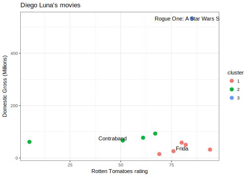
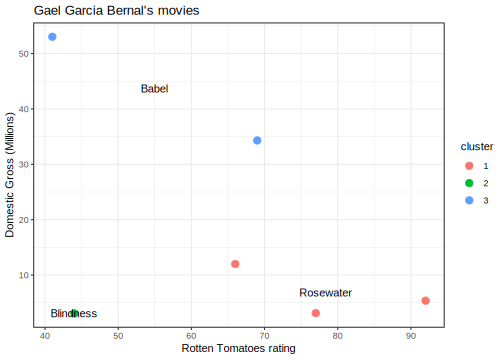

3 An Illustrative Analysis
http://fivethirtyeight.com has a clever series of articles on the types of movies different actors make in their careers: https://fivethirtyeight.com/tag/hollywood-taxonomy/
I’d like to do a similar analysis. Let’s do this in order:
- Let’s do this analysis for Diego Luna
- Let’s use a clustering algorithm to determine the different types of movies they make
- Then, let’s write an application that performs this analysis for any actor and test it with Gael García Bernal
- Let’s make the application interactive so that a user can change the actor and the number of movie clusters the method learns.
For now, we will go step by step through this analysis without showing how we perform this analysis using R. As the course progresses, we will learn how to carry out these steps.
3.1 Gathering data
3.1.1 Movie ratings
For this analysis we need to get the movies Diego Luna was in, along with their Rotten Tomatoes ratings. For that we scrape this webpage: https://www.rottentomatoes.com/celebrity/diego_luna.
Once we scrape the data from the Rotten Tomatoes website and clean it up, this is part of what we have so far:
| RATING | TITLE | CREDIT | BOX OFFICE | YEAR |
|---|---|---|---|---|
| 5 | Flatliners | Ray | $16.9M | 2017 |
| 85 | Rogue One: A Star Wars Story | Captain Cassian Andor | $532.2M | 2016 |
| 88 | Blood Father | Jonah | — | 2016 |
| 82 | The Book of Life | Manolo | — | 2014 |
| 100 | I Stay with You (Me quedo contigo) | Actor | — | 2014 |
| 67 | Elysium | Julio | $90.8M | 2013 |
| 41 | Casa de mi padre | Raul | $5.9M | 2012 |
This data includes, for each of the movies Diego Luna has acted in, the rotten tomatoes rating, the movie title, Diego Luna’s role in the movie, the U.S. domestic gross and the year of release.
3.1.2 Movie budgets and revenue
For the movie budgets and revenue data we scrape this webpage: http://www.the-numbers.com/movie/budgets/all
(Note 01.2018: after the initial version of this analysis, this website added pagination to this URL. We will be using the CSV file scraped originally in Summer 2017 for this analysis and leave the issue of dealing with pagination as an exercise.)
## Parsed with column specification:
## cols(
## release_date = col_date(format = ""),
## movie = col_character(),
## production_budget = col_double(),
## domestic_gross = col_double(),
## worldwide_gross = col_double()
## )This is part of what we have for that table after loading and cleaning up:
| release_date | movie | production_budget | domestic_gross | worldwide_gross |
|---|---|---|---|---|
| 2009-12-18 | Avatar | 425 | 760.50762 | 2783.9190 |
| 2015-12-18 | Star Wars Ep. VII: The Force Awakens | 306 | 936.66223 | 2058.6622 |
| 2007-05-24 | Pirates of the Caribbean: At World’s End | 300 | 309.42043 | 963.4204 |
| 2015-11-06 | Spectre | 300 | 200.07417 | 879.6209 |
| 2012-07-20 | The Dark Knight Rises | 275 | 448.13910 | 1084.4391 |
| 2013-07-02 | The Lone Ranger | 275 | 89.30212 | 260.0021 |
| 2012-03-09 | John Carter | 275 | 73.05868 | 282.7781 |
| 2010-11-24 | Tangled | 260 | 200.82194 | 586.5819 |
| 2007-05-04 | Spider-Man 3 | 258 | 336.53030 | 890.8753 |
| 2015-05-01 | Avengers: Age of Ultron | 250 | 459.00587 | 1404.7059 |
This data is for 5358 movies, including its release date, title, production budget and total gross revenue. The latter two are in millions of U.S. dollars.
One thing we might want to check is if the budget and gross entries in this table are inflation adjusted or not. To do this, we can make a plot of domestic gross, which we are using for the subsequent analyses.
## Loading required package: methods##
## Attaching package: 'lubridate'## The following object is masked from 'package:base':
##
## date
Although we don’t know for sure, since the source of our data does not state this specifically, it looks like the domestic gross measurement is not inflation adjusted since gross increases over time.
3.2 Manipulating the data
Next, we combine the datasets we obtained to get closer to the data we need to make the plot we want.
We combine the two datasets using the movie title, so that the end result has the information in both tables for each movie.
| RATING | TITLE | CREDIT | BOX OFFICE | YEAR | release_date | production_budget | domestic_gross | worldwide_gross |
|---|---|---|---|---|---|---|---|---|
| 5 | Flatliners | Ray | $16.9M | 2017 | 1990-08-10 | 26.0 | 61.30815 | 61.30815 |
| 85 | Rogue One: A Star Wars Story | Captain Cassian Andor | $532.2M | 2016 | 2016-12-16 | 200.0 | 532.17732 | 1050.98849 |
| 82 | The Book of Life | Manolo | — | 2014 | 2014-10-17 | 50.0 | 50.15154 | 97.65154 |
| 67 | Elysium | Julio | $90.8M | 2013 | 2013-08-09 | 120.0 | 93.05012 | 286.19209 |
| 51 | Contraband | Gonzalo | $66.5M | 2012 | 2012-01-13 | 25.0 | 66.52800 | 98.40685 |
| 94 | Milk | Jack Lira | $31.8M | 2008 | 2008-11-26 | 20.0 | 31.84130 | 57.29337 |
| 69 | Criminal | Rodrigo | $0.8M | 2004 | 2016-04-15 | 31.5 | 14.70870 | 38.77126 |
| 60 | The Terminal | Enrique Cruz | $77.1M | 2004 | 2004-06-18 | 75.0 | 77.07396 | 218.67396 |
| 80 | Open Range | Button | $58.3M | 2003 | 2003-08-15 | 26.0 | 58.33125 | 68.61399 |
| 76 | Frida | Alejandro Gomez | $25.7M | 2002 | 2002-10-25 | 12.0 | 25.88500 | 56.13124 |
3.3 Visualizing the data
Now that we have the data we need, we can make a plot:
Figure 3.1: Ratings and U.S. Domestic Gross of Diego Luna’s movies.
We see that there is one clear outlier in Diego Luna’s movies, which probably is the one Star Wars movie he acted in. The remaining movies could potentially be grouped into two types of movies, those with higher rating and those with lower ratings.
3.4 Modeling data
We can use a clustering algorithm to partition Diego Luna’s movies. We can use the data we obtained so far and see if the k-means clustering algorithm partitions these movies into three sensible groups using the movie’s rating and domestic gross.
Let’s see how the movies are grouped:
| TITLE | RATING | domestic_gross | cluster |
|---|---|---|---|
| The Book of Life | 82 | 50.15154 | 1 |
| Milk | 94 | 31.84130 | 1 |
| Criminal | 69 | 14.70870 | 1 |
| Open Range | 80 | 58.33125 | 1 |
| Frida | 76 | 25.88500 | 1 |
| Rogue One: A Star Wars Story | 85 | 532.17732 | 2 |
| Flatliners | 5 | 61.30815 | 3 |
| Elysium | 67 | 93.05012 | 3 |
| Contraband | 51 | 66.52800 | 3 |
| The Terminal | 60 | 77.07396 | 3 |
3.5 Visualizing model result
Let’s remake the same plot as before, but use color to indicate each movie’s cluster assignment given by the k-means algorithm.

The algorithm did make the Star Wars movie it’s own group since it’s so different that the other movies. The grouping of the remaining movies is not as clean.
To make the plot and clustering more interpretable, let’s annotate the graph with some movie titles. In the k-means algorithm, each group of movies is represented by an average rating and an average domestic gross. What we can do is find the movie in each group that is closest to the average and use that movie title to annotate each group in the plot.

Roughly, movies are clustered into Star Wars and low vs. high rated movies. The latter seem to have some difference in domestic gross. For example, movies like “The Terminal” have lower rating but make slightly more money than movies like “Frida”. We could use statistical modeling to see if that’s the case, but will skip that for now. Do note also, that the clustering algorithm we used seems to be assigning one of the movies incorrectly, which warrants further investigation.
3.6 Abstracting the analysis
While not a tremendous success, we decide we want to carry on with this analysis. We would like to do this for other actors’ movies. One of the big advantages of using R is that we can write a piece of code that takes an actor’s name as input, and reproduces the steps of this analysis for that actor. We call these functions, we’ll see them and use them a lot in this course.
For our analysis, this function must do the following:
- Scrape movie ratings from Rotten Tomatoes
- Clean up the scraped data
- Join with the budget data we downloaded previously
- Perform the clustering algorithm
- Make the final plot
With this in mind, we can write functions for each of these steps, and then make one final function that puts all of these together.
For instance, let’s write the scraping function. It will take an actor’s name and output the scraped data.
Let’s test it with Gael García Bernal:
| RATING | TITLE | CREDIT | BOX OFFICE | YEAR |
|---|---|---|---|---|
| 91% | The Kindergarten Teacher | Actor | — | 2018 |
| No Score Yet | Viva - A vida é uma festa | Hector | — | 2017 |
| 97% | Coco | Hector | $192M | 2017 |
Good start. We can then write functions for each of the steps we did with Diego Luna before.
Then put all of these steps into one function that calls our new functions to put all of our analysis together:
We can test this with Gael García Bernal
analyze_actor("Gael Garcia Bernal")
3.7 Making analyses accessible
Now that we have written a function to analyze an actor’s movies, we can make these analyses easier to produce by creating an interactive application that wraps our new function. The shiny R package makes creating this type of application easy.
3.8 Summary
In this analysis we saw examples of the common steps and operations in a data analysis:
Data ingestion: we scraped and cleaned data from publicly accessible sites
Data manipulation: we integrated data from multiple sources to prepare our analysis
Data visualization: we made plots to explore patterns in our data
Data modeling: we made a model to capture the grouping patterns in data automatically, using visualization to explore the results of this modeling
Publishing: we abstracted our analysis into an application that allows us and others to perform this analysis over more datasets and explore the result of modeling using a variety of parameters